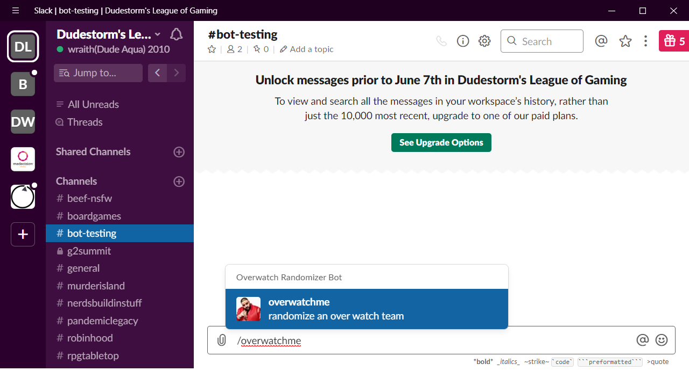
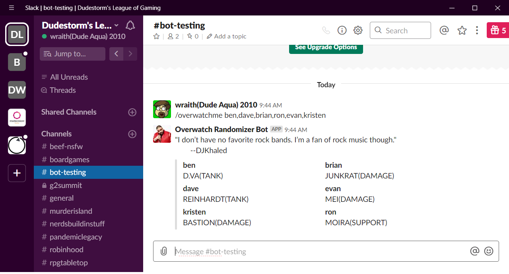
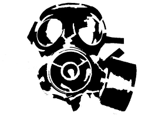

Software Projects
Various projects I have tinkered with
Overwatch Slackbot

Play enough overwatch and you need something to change things. This slack bot will randomly assign roles to a team from 2 to 6 players. The slack bot uses DJ Khaled as its icon and also includes one of his inpirational quotes along with role assignments.
 
{kind=link}
{kind=link}
Mission Control

Marple Presbyterian Church's VBS 2019 theme was to mars and beyond. So I created the mission control game. Its done in an 8 bit retro look which really seemed to land evan with the kids too young to know what that is. If you can solve the security puzzle and complete the launch sequence it trips a relay via webservice which sets off a smoke machine.
N Queens

The N Queen is the problem of placing N chess queens on an N×N chessboard so that no two queens attack each other. This is one of thoose math problems that takes over my mind from time to time. When I have an idea worth coding for testing you can find it here.
Halftone SVG Generator

A while back I did a study in turning portraits into halftone version images. I would then cut thoose on a laser cutter and even attempted a few etchings in tile and other materials. I wrote this program to translate images to SVG cut fules in haltone.

Stencil Tool
Its really easy to make SVG stencils in Adobe Ilustrator. However on concept that is difficult to do in adobe is to add tabs to hold islands in position. This toll breaks up overly long lines and anchors islands. Still a work in progress.